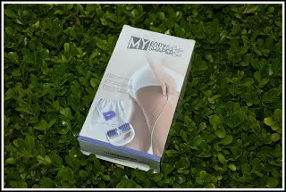
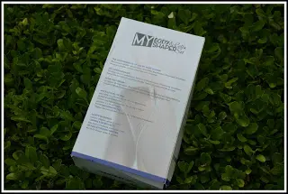
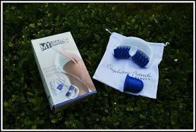

Rullo per la cellulite
La cellulite è il primo vero nemico per tutte le donne.
Per la bellezza della donna a volte bisogna prestare attenzione ai dettagli. Oggi voglio parlarvi di un trattamento Anti cellulite con un rullo massaggiante manuale.
Usandolo inizialmente vedrete che sentirete dolori e qualche lividi qui e là.

Ma usandolo regolarmente tutti i giorni la pelle si abitua al trattamento e funziona davvero.
Ha un impugnatura ergonomica ed è fatto di una plastica dura e di ottima qualità.
Le rotellina sono fatte di gomma morbida e permettono un buon massaggio.
Usando dunque, questo rullo vedremo che la pelle sarà più tonica e noterete, nel tempo, meno buccia d'arancia, aiutando a stimolare il metabolismo, aumentando la circolazione.

Consigli utili per la cellulite:
Vi consiglio di usare il ruolo non così a secco ma bensì con una crema Anti cellulite in modo tale da far scivolare bene i rulli e così eviterete anche i lividi di cui vi parlavo all'inizio. Massaggiare la parte interessata con movimenti circolari o facendo avanti e indietro senza pressare molto. Massaggiando, almeno 10 minuti al giorno, stimoleremo il drenaggio linfatico e favoriamo la circolazione sanguigna.
All'interno della confezione troveremo anche una coppetta Spa Cellu Shaper, non è altro che una coppetta in silicone ipoallergenica.
Questa coppetta può essere usata in ogni parte del corpo ovvero: cosce, gambe, ginocchia, stomaco, fianchi, glutei e braccia.

Come va usata il set Anti Cellulite?
Applicate un olio per il corpo sulla parte interessata e stringere la coppetta a tipo sottovuoto e muovere la coppetta con movimenti circolari o avanti e indietro.
Se noterete che c'è un leggero arrossamento non preoccupatevi, è normale. Facendo queste due cose 10 minuti al giorno saremo pronte per l'estate.
Prezzo: 14,95€
Per acquistare il set Anti cellulite CLICCA QUI